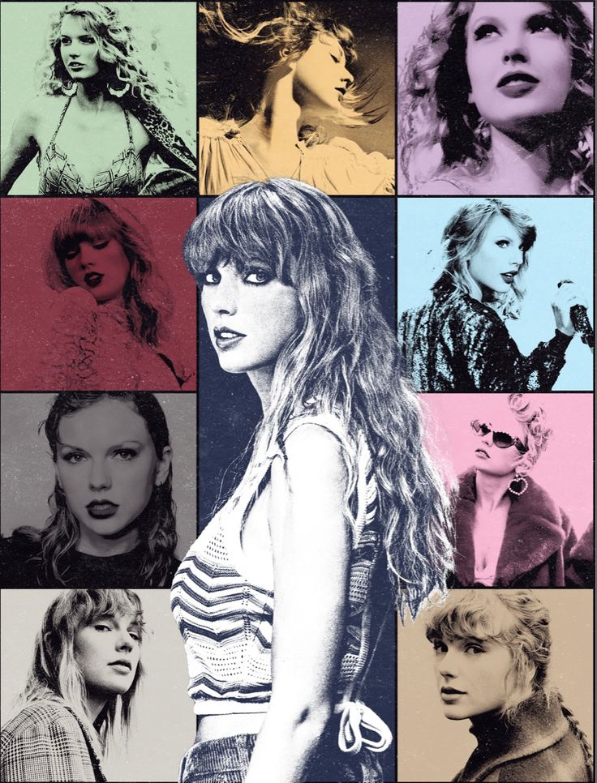

|  |
In our Eras eraTaylor Swift has been very busy these past three years. During the pandemic she released two albums, Folklore (2020) and Evermore (2021). She has since released one new album and three re-recorded albums that she can proudly claim as her own. Fearless (Taylor's Version), Red (Taylor's Version), Midnights (2022), and Speak Now (Taylor's Version). In March of this year, Taylor started her Eras Tour, a journey through all of her musical eras, as Taylor describes it. Without a doubt, Taylor has taken over pop music and is having fun with it. |